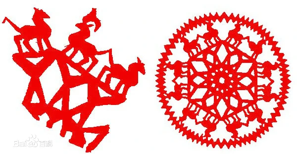
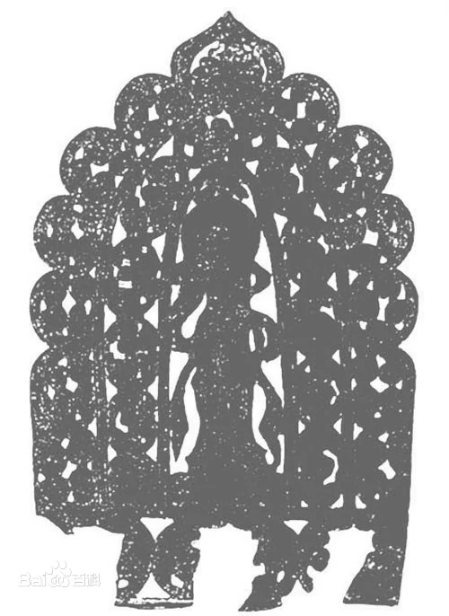
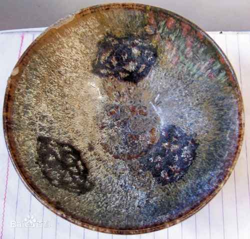
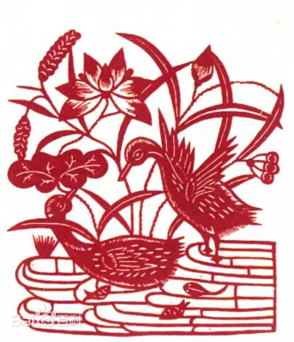

纸的发明是在公元前的西汉时代，在此之前是不可能有剪纸艺术的出现的，
但当时人们运用薄片材料，通过镂空雕刻的技法制成工艺品，却早在未出现纸时就已流行
，即以雕、镂、剔、刻、剪的技法在金箔、皮革、绢帛，甚至在树叶上剪刻纹样。
《史记》中的剪桐封弟记述了西周初期周成王用梧桐叶剪成“圭”赐其弟，封姬虞到唐为侯。
战国时期就有用皮革镂花，（湖北江凌望山一号楚墓出土文物之一），
银箔镂空刻花（河南辉县固围村战国遗址出土文物之一），
都与剪纸同出一辙，他们的出现都为民间剪纸的形成奠定了一定的基础。


唐代剪纸已处于大发展时期，杜甫《彭衙行》诗中有“暖汤濯我足，翦纸招我魂”的句子，
以剪纸招魂的风俗当时就已流传民间。现藏于大英博物馆的唐代剪纸均可看出当时剪纸手工艺术水平已极高
，画面构图完整，表达一种天上人间的理想境界。
[9]唐代流行颉，其镂花木版纹样具有剪纸特色，如现藏日本正仓院的“对羊”，
其羊的纹样就是典型的剪纸手工艺术表现手法。
唐代民间还出现了利用剪纸形式制作的漏版印花板，
人们用厚纸雕刻成花版，将染料漏印到布匹上，形成美丽的图案。 [20]另外，在敦煌莫高窟也出土过唐代及五代的剪纸，
如《双鹿塔》《群塔与鹿》《佛塔》等都属于“功德花纸”一类，主要是用来敬供佛像，装饰殿堂、道场。
其画面构图复杂，有具体的内容，外还有《菩萨立像》《持幡菩萨立像》等水墨画镂空剪纸，
是剪纸与绘画相结合的作品
南宋时期，已经出现了以剪纸为职业的行业艺人。
据宋人周密《武林旧事》中记载，此时杭州的“小经济”多达上百种。
其中就专门有“剪镞花样”者，有的善剪“诸家书字”，有的专剪“诸色花样” [10]。
宋代造纸业成熟，纸品名目繁多，为剪纸的普及提供了条件。
如成为民间礼品的“礼花”，贴于窗上的“窗花”，或用于灯彩、茶盏的装饰。
[9]宋代民间剪纸的运用范围逐渐扩大，江西吉州窑将剪纸作为陶瓷的花样，通过上釉、烧制使陶瓷更加精美；
民间还采用剪纸的形式，用驴、牛、马、羊等动物的皮、雕刻成皮影戏的人物造型；蓝印花布工艺制作的镂花制版是用油纸板雕镂成纹，
刮浆印花的花版纹样就是采用剪纸的技法，有阴、阳刻之分，长线要割断，以点分虚实。


明、清时期剪纸手工艺术走向成熟，并达到鼎盛时期。
民间剪纸手工艺术的运用范围更为广泛， [9]举凡民间灯彩上的花饰，扇面上的纹饰，以及刺绣的花样等等，
无一不是利用剪纸作为装饰成再加工的。 [21]而更多的是中国民间常常将剪纸作为装饰家居的饰物，美化居家环境，
如门栈、窗花、柜花、喜花，棚顶花等都是用来装饰门窗、房间的剪纸。 [20]
剪纸艺术虽然来自于民间，但到清代已经成为全民性的艺术
，就连当时的皇亲国戚也都离不开剪纸。北京故宫的坤宁宫是清代皇帝结婚时的花烛洞房。
宫殿前后窗的窗纸都是裱糊在外面的。墙壁用纸裱糊，四角贴有黑色的“囍”字剪纸角花，
顶棚中心是黑色的龙凤团花剪纸。宫殿两旁的过道墙壁上也贴有剪纸。从剪纸的纹样、用料、用色来看，
与普通农家的顶棚花、墙花相比，除了剪纸图案稍大以外，基本没有差别